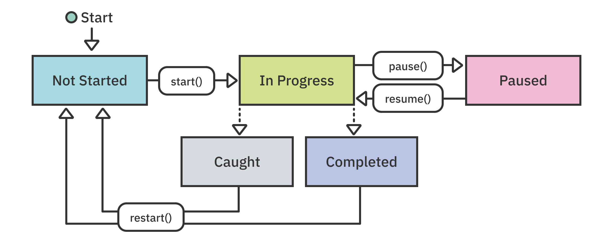
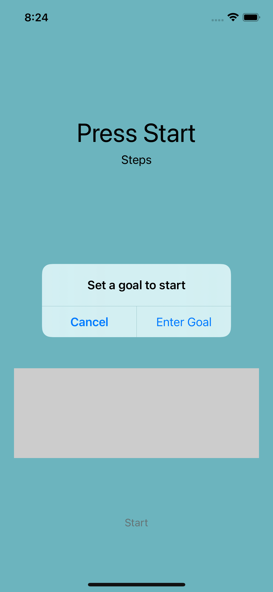
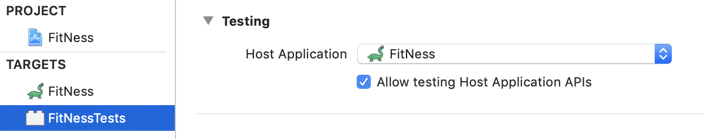
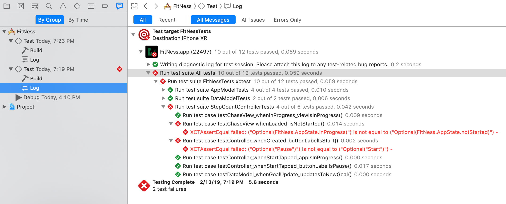
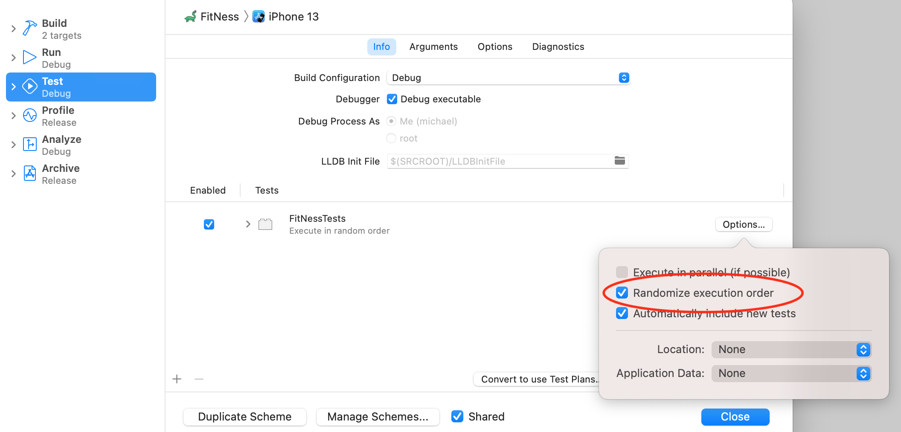
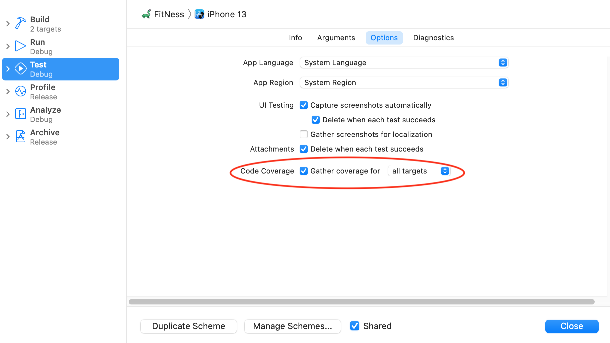
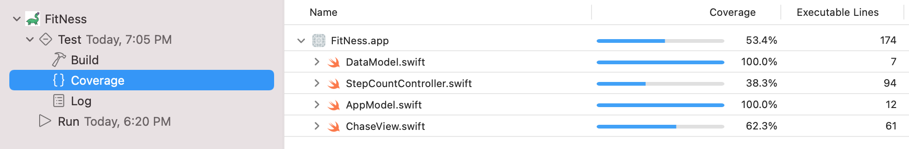
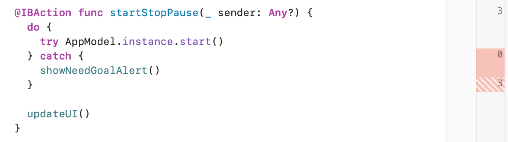
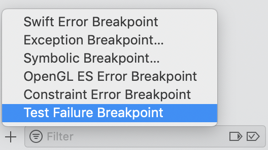
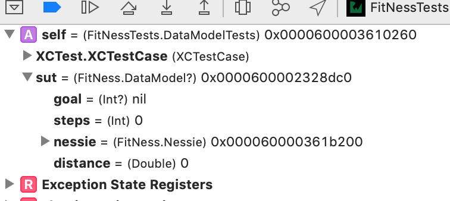

4: 测试表达式¶
TDD过程是简单明了的，但编写好的测试可能并不总是这样。幸运的是，每一年，Xcode和Swift都变得更加强大。这意味着你有很多功能可以使用，有助于编写和运行测试。
本章介绍了如何使用XCTAssert函数。这些是测试基础设施的主要参与者。你将通过收集代码覆盖率来验证最小的测试量。最后，你将使用测试调试器来发现和修复测试错误。
在这一章中，你将了解到：
XCTAssert函数UIViewController测试- 代码覆盖率
- 测试调试
Note
请确保使用第四章的启动项目，而不是继续使用第三章的最终项目。它添加了一些新东西，包括本教程中要添加的代码的占位符。
断言方法¶
在第3章"TDD应用设置"中，你只使用了XCTAssertEqual。在XCTest中还有其他几个断言函数：
- 平等性：
XCTAssertEqual，XCTAssertNotEqual - 真实性：
XCTAssertTrue，XCTAssertFalse - 无效性：
XCTAssertNil，XCTAssertNotNil - 比较：
XCTAssertLessThan，XCTAssertGreaterThan,XCTAssertLessThanOrEqual，XCTAssertGreaterThanOrEqual - 出错：
XCTAssertThrowsError，XCTAssertNoThrow
最终，任何测试案例都可以归结为一个条件：（它是否满足一个期望），所以任何测试断言都可以被重新组成一个XCTAssertTrue。
Note
在XCTest中，只要没有失败，一个测试就被标记为通过。这意味着，它不需要一个积极的XCTAssert断言。一个没有断言的测试将被标记为成功，尽管它没有测试任何东西。
应用程序的状态¶
在上一章中，你建立了将应用程序从未启动状态转移到正在进行的状态的功能。现在是思考整个应用程序生命周期的好时机。
下面是可能的应用程序状态，由AppState枚举表示：
notStarted：应用程序的初始状态。inProgress：该应用程序正在积极监测用户和Nessie的活动。paused：该应用程序被用户暂停了。Nessie被置入睡眠状态，活动追踪停止。completed：用户在Nessie赶上之前已经达到了他们的活动目标。caught：Nessie追上了用户并"吃掉"了他们。
下图显示了可能的状态转换：

实线代表用户在用户界面上的操作，虚线则是由于时间或活动事件而自动发生。基于用户的转换将在本章项目中涉及，而自动转换将在第五章："测试期望"中涉及。
断言为真和假¶
为了构建出状态转换，你需要向应用程序添加一些关于用户的信息。完成的状态和被抓住的状态取决于用户的活动、设定的目标和Nessie的活动。为了保持架构的简洁，应用程序的状态信息将与跟踪用户的原始数据分开。
在测试目标中，在数据模型组中添加一个新的单元测试案例类。将其命名为DataModelTests。再次，像往常一样，删除testExample()和testPerformanceExample()。
接下来，在文件的顶部添加以下导入：
@testable import FitNess
接下来，在setUpWithError()上面添加以下实例变量：
var sut: DataModel!
现在，你有一个红色的测试案例类。为了解决这个问题，打开DataModel.swift，添加以下内容，这是为了使测试能够编译的最低要求：
class DataModel {
}
这将创建一个存根类来修复编译器错误。你将在此基础上逐一建立。
接下来，打开DataModelTests.swift，用以下内容替换setUpWithError()和tearDownWithError()：
override func setUpWithError() throws {
try super.setUpWithError()
sut = DataModel()
}
override func tearDownWithError() throws {
sut = nil
try super.tearDownWithError()
}
这些为每个测试创建一个新的DataModel，之后再进行清理。
接下来，在DataModelTests的末尾添加以下代码：
// MARK: - Goal
func testModel_whenStarted_goalIsNotReached() {
XCTAssertFalse(
sut.goalReached,
"goalReached should be false when the model is created")
}
这个测试引入了XCTAssertFalse，它检查预期值是否为假。每个XCTAssert函数也可以接受一个可选的字符串消息。当测试失败时，这个消息会显示在标准编辑器和报告导航器的错误日志中。如果你遵循测试命名惯例，每个测试只使用一个XCTAssert，那么你通常不需要提供一个错误信息。虽然测试名称通常是描述性的，足以告知你为什么会发生失败，但如果断言不是很明显，添加一个消息可能是有用的。
通过在DataModel.swift中给DataModel添加以下内容来修复不编译的测试：
var goalReached: Bool { return false }
构建和测试，测试会通过。
初始状态是无聊的状态。接下来构建出业务逻辑。
首先，打开DataModelTests.swift，添加以下测试方法：
func testModel_whenStepsReachGoal_goalIsReached() {
// given
sut.goal = 1000
// when
sut.steps = 1000
// then
XCTAssertTrue(sut.goalReached)
}
这测试的逻辑是 "当步骤数等于或超过目标时就达到了目标"。
现在，你需要一个目标和步骤来编译它。打开DataModel.swift，在下面添加以下内容： goalReached:
var goal: Int?
var steps: Int = 0
goal是一个可选项，因为它应该由用户明确设置。
现在，测试将被建立，但却失败了，因为你之前将goalReached的值硬编码为false。
让我们来解决这个问题，用下面的实现代替goalReached：
var goalReached: Bool {
if let goal = goal,
steps >= goal {
return true
}
return false
}
再次运行测试。这在手指上有点麻烦，但你可以使用Product ▸ Perform Action ▸ Test Again (^⌥⌘G)，从Xcode的任何地方重新运行最后一次测试。现在，测试通过了，你已经看到了真和假的断言。
几乎每一个断言都只是一个布尔测试，并且可以被重写成这样。这意味着你可以写你自己的辅助方法，看起来像XCTAssert的。这些方法只是最终要评估为一个布尔值，并传递给XCTAssertTrue()。
测试错误¶
如果没有设置可选的目标属性，应用程序进入inProgress状态就没有意义。因此，在没有目标的情况下启动应用程序是一个错误!
让它成为一个真正的错误。打开AppModel.swift，然后在start()的函数签名中添加throws关键字：
func start() throws {
现在，修复编译错误。在StepCountController.swift中，将startStopPause(_:)改为以下内容：
@IBAction func startStopPause(_ sender: Any?) {
do {
try AppModel.instance.start()
} catch {
showNeedGoalAlert()
}
updateUI()
}
一旦你全部完成，在没有设置目标的情况下，点击开始按钮将显示一个警报。现在不要担心先为这个写一个测试。
接下来，在AppModelTests.swift中更新testAppModel_whenStarted_isInProgressState()。在sut.start()行添加一个try?以平息错误。这个测试仍然应该通过。稍后你会在改变逻辑后回到这里。
接下来，还是在AppModelTests.swift中，在testAppModel_whenStarted_isInProgressState()之前添加以下测试：
func testModelWithNoGoal_whenStarted_throwsError() {
XCTAssertThrowsError(try sut.start())
}
使用XCTAssertThrowsError，你可以验证如果模型在没有目标集的初始状态下启动，会抛出一个错误。
这个测试失败了，因为还没有抛出错误。为了解决这个问题，打开AppModel.swift并添加以下实例变量：
let dataModel = DataModel()
应用程序模型将是数据模型的容器，因为应用程序的数据是应用程序状态的一个子集。数据模型的目标是需要检查错误的。
最后，在start()的顶部添加以下guard语句：
guard dataModel.goal != nil else {
throw AppError.goalNotSet
}
现在，构建并测试testModelWithNoGoal_whenStarted_throwsError，测试将通过。
接下来，验证设置一个目标意味着start()不会抛出一个错误。打开AppModelTests.swift，在// MARK: - Given下添加以下内容：
func givenGoalSet() {
sut.dataModel.goal = 1000
}
接下来，在testModelWithNoGoal_whenStarted_throwsError()下添加以下测试：
func testStart_withGoalSet_doesNotThrow() {
// given
givenGoalSet()
// then
XCTAssertNoThrow(try sut.start())
}
这个测试应该直接转为绿色，因为应用程序的逻辑已经写好了。尽管这个测试不需要添加或修改代码，但它仍然是TDD，因为测试是领先的。这个测试只是完成了对逻辑流程的所有情况的检查。
最后，是时候修复所有其他因为这个变化而开始失败的测试了。首先，在testAppModel_whenStarted_isInProgressState的顶部添加以下内容：
// given
givenGoalSet()
接下来，打开StepCountControllerTests.swift，在// MARK: - Given下添加以下内容：
func givenGoalSet() {
AppModel.instance.dataModel.goal = 1000
}
最后，在//MARK: - In Progress下的两个测试中，在每个测试的顶部添加以下内容：
// given
givenGoalSet()
建立并运行所有的测试。他们都通过了! 在改变应用程序的逻辑后，改变这些现有的测试以再次通过是TDD周期的重构阶段的另一个方面。
如果你构建并运行该应用，现在当点击Start时将会有一个警报，并且该应用不会进入进程中状态。在下一节中，你将更新应用程序，使其具有保存目标的能力。

视图控制器测试¶
现在，模型可以有一个目标设置和一个检查它的应用程序状态，下一个功能是将这个状态暴露给用户。在上一章中，你为StepCountController写了一些单元测试。现在在此基础上，再进行一些适当的视图控制器单元测试。
功能性视图控制器测试¶
在测试视图控制器时，最重要的是不要直接测试视图和控件。这最好用UI自动化测试来完成。这里，目标是检查视图控制器的逻辑和状态。
功能性测试是通过使用与UI交互的方法（回调、委托方法等）和逻辑方法（更新状态）分开进行的。
Note
如果你有其他应用程序架构的经验，使用像MVVM或VIPER这样的东西可以使测试这种类型的逻辑更容易。将ViewModel从控制器中分离出来，可以将单元测试的逻辑从控制器中取出。在本节中，你将继续使用传统的苹果MVC模型来构建应用程序。这也是大多数文档中所涉及的，也是开发iOS应用程序的传统起点。
首先，打开StepCountControllerTests.swift。接下来，在// MARK - Goal下添加以下测试：
func testDataModel_whenGoalUpdate_updatesToNewGoal() {
// when
sut.updateGoal(newGoal: 50)
// then
XCTAssertEqual(AppModel.instance.dataModel.goal, 50)
}
这个测试调用updateGoal(newGoal:)并验证数据模型已被正确更新。
请确保在super.tearDownWithError()上面的tearDownWithError()中添加以下一行，以恢复状态：
AppModel.instance.dataModel.goal = nil
正如预期的那样，测试将失败。让我们把测试变成绿色。打开StepCountController.swift，将updateGoal(newGoal:)替换为以下内容：
func updateGoal(newGoal: Int) {
AppModel.instance.dataModel.goal = newGoal
}
另一个美丽的绿色测试。
使用主机应用程序¶
这个应用程序的下一个要求是，中央视图应该显示用户的头像处于运行状态。这个词应该标志着一个断言，所以你要写一个，现在。首先，打开StepCountControllerTests.swift。接下来，在// MARK: - Chase View下添加以下内容：
func testChaseView_whenLoaded_isNotStarted() {
// when loaded, then
let chaseView = sut.chaseView
XCTAssertEqual(chaseView?.state, .notStarted)
}
测试建立了，但没有通过，因为chaseView为零。这是什么原因呢？
嗯，在代码中存在一个作弊行为，使现有的测试得以通过。在正常的应用程序流程中，StepCountController是由故事板创建和填充的。当任何应用程序代码执行时，它已经被加载了。
在这个测试中，sut被直接初始化，这意味着它的起始状态和应用程序运行时不一样。幸运的是，有一个干净的方法来处理这个问题。
当单元测试作为应用方案中测试动作的一部分被运行时，Xcode使用目标设置中指定的主机应用。
打开FitNessTests目标的项目编辑器的General标签。你会看到FitNess被选为主机应用程序。

这意味着，运行测试动作，将在指定的目标（模拟器或设备）上启动主机应用程序。测试运行器在开始测试之前等待应用程序的加载，测试在应用程序的上下文中运行。
因此，你可以在测试中访问UIApplication对象和整个View层次结构。
在项目导航器中，在FitNessTests目标下，添加一个新组：Test Classes。接下来，在该组中创建一个新的Swift文件，ViewControllers.swift。
接下来，把这个文件的内容替换成以下内容：
import UIKit
@testable import FitNess
func getRootViewController() -> RootViewController {
guard let controller =
(UIApplication.shared.connectedScenes.first as? UIWindowScene)?
.windows
.first?
.rootViewController as? RootViewController else {
assert(false, "Did not a get RootViewController")
}
return controller
}
这个函数导航应用程序的窗口，以检索根视图控制器，它的类型是RootViewController。这个辅助函数将被用来获取其他视图控制器。
接下来，在FitNessTests下创建另一个新组：Test Extensions。在该组中，添加一个新的Swift文件。RootViewController+Tests.swift。
用下面的RootViewController扩展来替换这个文件的内容：
import UIKit
@testable import FitNess
extension RootViewController {
var stepController: StepCountController {
//swiftlint:disable force_cast
return children.first { $0 is StepCountController }
as! StepCountController
}
}
现在，你已经拥有了从主机应用中获取StepCountController的所有部件。
修复测试¶
回到StepCountControllerTests.swift，将setUpWithError()改为以下内容：
override func setUpWithError() throws {
try super.setUpWithError()
let rootController = getRootViewController()
sut = rootController.stepController
}
删除testController_whenCreated_buttonLabelIsStart()中对viewDidLoad的调用，因为不再需要了。
接下来，在// MARK: - Given下添加以下方法：
func givenInProgress() {
givenGoalSet()
sut.startStopPause(nil)
}
这将使应用程序进入inProgress状态。这是通过测试testController_whenStartTapped_appIsInProgress()来保证的。
最后，在StepCountControllerTests的底部添加以下测试：
func testChaseView_whenInProgress_viewIsInProgress() {
// given
givenInProgress()
// then
let chaseView = sut.chaseView
XCTAssertEqual(chaseView?.state, .inProgress)
}
这个测试会失败，因为chaseView还没有被更新。打开StepCountController.swift，将底部的updateChaseView()替换为以下内容：
private func updateChaseView() {
chaseView.state = AppModel.instance.appState
}
TestChaseView_whenInProgress_viewIsInProgress现在可以通过了，而且不会再有加载视图控制器的怪事。
Note
检索和测试视图控制器的另一种方法可以按以下方式进行。首先，获取对storyboard的引用：
let storyboard = UIStoryboard(name: "Main", bundle: nil)
第二，获得一个对视图控制器的引用：
let stepController = storyboard.instantiateViewcontroller(withIdentifier: "stepController") as! stepCountController
最后，如果需要，你可以按以下方式加载视图：
stepController.loadViewIfNeeded()
按照这种模式，你可以为每个测试实例化一个新的视图控制器，并为每个测试提供设置和拆除视图控制器的选择。
测试顺序很重要¶
构建并测试整个目标，大部分的测试都应该通过，但不包括testController_whenCreated_buttonLabelIsStart。这个测试失败了。
现在，只测试testController_whenCreated_buttonLabelIsStart，它就会通过。嗯...奇怪。
打开报告导航器，看看你上次运行所有测试的结果。看一下测试的失败：XCTAssertEqual failed: ("Optional("Pause")") is not equal to ("Optional("Start")").

这条信息不仅告诉你按钮的文本不是预期的，而且具体地说，按钮的文本是Pause。当应用程序正在进行时，按钮应该是这样写的。这违反了测试是从一个新的StepCountController开始的假设。
之前改变为使用主机应用的StepCountController意味着每一次setUpWithError()都不会创建一个新的控制器，并且应用的状态会被持久化。为了获得干净的测试，你需要在tearDownWithError()中重置状态。
为了帮助解决这个问题，你可以在AppModel上创建一个新函数来重置状态。但是，首先，编写测试。
打开AppModelTests.swift。在Given部分添加以下帮助程序：
func givenInProgress() {
givenGoalSet()
try! sut.start()
}
这将使应用程序处于进行中的状态，使状态重启测试能够真正测试一个变化。
接下来，在该测试用例类的底部添加以下内容：
// MARK: - Restart
func testAppModel_whenReset_isInNotStartedState() {
// given
givenInProgress()
// when
sut.restart()
// then
XCTAssertEqual(sut.appState, .notStarted)
}
这将测试尚未添加的restart()是否将模型放回notStarted。为了让测试通过，打开AppModel.swift，在AppModel中添加以下内容：
func restart() {
appState = .notStarted
}
这个函数目前将被用作测试助手，但最终将成为整个应用程序状态循环的一部分。
最后，回去修复原来的问题。将StepCountControllerTests.swift中的tearDownWithError()改为：
override func tearDownWithError() throws {
AppModel.instance.dataModel.goal = nil
AppModel.instance.restart()
sut.updateUI()
try super.tearDownWithError()
}
现在，运行整个目标的测试将会成功。
随机化的顺序¶
在方案的测试动作中也有一个选项，可以随机化测试顺序。编辑FitNess方案。选择Test动作。在中心窗格中，FitNessTests旁边有一个Options...按钮。点击该按钮，在弹出的窗口中，勾选随机化执行顺序。这将使测试每次都以随机顺序运行。

这可以暴露出隐藏的测试间的依赖关系，而这些依赖关系在默认的排序中是不会被发现的。缺点是，排序没有保证，这意味着你可能会错过之前的问题。另外，如果真的出现了排序问题，如果是非常特殊的问题，可能就很难重现了。零星的、难以诊断的测试失败是随机排序发现问题的一个症状。
代码覆盖率¶
在方案编辑器的问题上，再次打开测试行动。这次选择Options标签。有一个代码覆盖率的复选框。勾选它。

再次运行测试。测试成功后，打开报告导航器。在最新的测试下，会有三个报告。建立，覆盖率和日志。选择覆盖率，显示覆盖率报告。

代码覆盖率是衡量在测试过程中执行了多少行应用程序的代码。在目标中会有一个每个文件的列表，以及被执行的代码行的百分比。一个文件有100%或接近意味着你在严格遵循TDD。当测试先被写好时，只有通过测试所需的代码才会被添加。
打开一个单独的文件将显示每个功能或闭合的覆盖率。双击一个文件或函数名将在编辑器中打开该文件。
打开StepCountController.swift，导航到startStopPause(_:)：

你会在编辑器的右侧看到一个覆盖率注释。显示的数字代表该行被执行的次数。带有红色标记或"0"的行表示有机会添加额外的测试。
带有红色条纹注释的行意味着该行只有一部分被运行。悬停在注释栏中的条纹上，会以绿色显示哪部分被运行，以红色显示哪部分没有被运行。
在StepCountController中，当AppModel.start()抛出一个错误时，看起来startStopPause(_:)方法从未被调用。
测试这个条件的问题是，当出现错误时，会显示一个警报控制器。你可以写一个测试来检查警报控制器，但这其实是UI自动化测试的范畴。你可以重构StepCountController，以便在错误情况下设置一个变量或调用一个回调，但这样你就会为了增加一个测试而修改应用程序代码。这样一来，测试就是在测试自己，而不是测试应用程序的功能，这并没有提供任何价值。
目标应该是尽可能的接近100%。覆盖率并不意味着代码可以工作，但缺乏覆盖率意味着它没有被测试。对于视图和视图控制器来说，不期望达到100%的覆盖率，因为TDD不包括UI测试。当你把单元测试和UI自动化测试结合起来时，那么你应该期望能够覆盖大部分甚至所有这些文件。
调试测试¶
当涉及到调试测试时，你已经练就了第一道防线。那就是："我测试的是正确的东西吗？"
要确保：
- 你在
given语句中有正确的假设。 - 你的那么语句准确地反映了期望的行为。
如果在测试代码中没有出现明显的问题，接下来要检查测试执行顺序的保留状态。同时使用代码覆盖率来确保采取正确的代码路径。
在尝试之后，你可以使用Xcode武器库中的一些其他工具。为了尝试它们，是时候考虑一下应用程序中的其他重要角色了。尼斯。
使用测试断点¶
随着Nessie的加入，数据模型变得更加复杂。下面是有了Nessie之后的新规则：
- 当
Nessie的距离大于或等于用户的距离时，Nessie获胜（用户被抓住）。当距离为0时，用户不能被抓住，这是开始条件。 - 如果用户被
Nessie抓住，就不能达到目标。
打开DataModelTests.swift，在DataModelTests中添加以下测试：
// MARK: - Nessie
func testModel_whenStarted_userIsNotCaught() {
XCTAssertFalse(sut.caught)
}
这测试了在一个新的DataModel下，用户不会被抓住。这个测试还不能编译。
通过在DataModel.swift中给DataModel添加以下内容来修复这个破损的测试：
// MARK: - Nessie
let nessie = Nessie()
var distance: Double = 0
var caught: Bool {
return nessie.distance >= distance
}
这在数据模型中增加了一个Nessie，一个跟踪用户距离的变量，以及一个比较距离的计算变量。为距离使用了一个单独的变量，而不是步骤，以使以后的计算更简洁。
即使更新了代码，测试仍然失败。有几种方法可以去诊断这个问题。正如你已经看到的，有几件事情需要检查。
- 测试本身是正确的，给定的是一个在
startUp()中创建的新的DataModel。然后也是正确的，捕获应该是假的。 - 如代码覆盖率所示，
DataModel代码已被执行。
一个好的下一步是尝试调试器。在断点导航器中，点击底部的+。选择测试失败断点：

这将创建一个特殊的断点，在单元测试失败时停止执行。再次运行该测试，调试器将在测试失败时停止：

打开变量视图，并展开self，然后是sut。

在这里，你会看到距离和步数都是0。所以应用程序的逻辑是正确的，Nessie和用户绑在一起，这应该是被捕获的状态。然而，这是一个特殊的情况，开始条件不能导致捕获。
为了解决这个问题，打开DataModel.swift，用下面的内容替换caught：
var caught: Bool {
return distance > 0 && nessie.distance >= distance
}
现在，测试将通过。这可能是一个明显的例子，但它说明了在运行测试时，你有所有正常的调试技术可用。
完成覆盖率¶
如果你看一下DataModel.swift的代码覆盖率，它不再是100%了。如果你看一下这个文件，注意到在更新的捕获中的条纹注释。悬停在条纹上显示，并非所有的条件都被检查了。这个0告诉你还有更多的测试。

打开DataModelTests.swift并添加以下测试案例以完成DataModel的覆盖：
func testModel_whenUserAheadOfNessie_isNotCaught() {
// given
sut.distance = 1000
sut.nessie.distance = 100
// then
XCTAssertFalse(sut.caughct)
}
func testModel_whenNessieAheadofUser_isCaught() {
// given
sut.nessie.distance = 1000
sut.distance = 100
// then
XCTAssertTrue(sut.caught)
}
现在，测试并检查一下DataModel的覆盖率... 100%
整理出需求¶
还有最后一块没有被考虑到。如果用户被抓住了，就不能达到目标。把这个测试添加到当前目标测试部分：
func testGoal_whenUserCaught_cannotBeReached() {
//given goal should be reached
sut.goal = 1000
sut.steps = 1000
// when caught by nessie
sut.distance = 100
sut.nessie.distance = 100
// then
XCTAssertFalse(sut.goalReached)
}
然后，为了使测试通过，在DataModel.swift中更新goalReached：
var goalReached: Bool {
if let goal = goal,
steps >= goal, !caught {
return true
}
return false
}
再次测试是否成功。
挑战¶
在StepCountControllerTests.tearDownWithError()中，有单独的调用来重置AppModel和DataModel。由于数据模型是应用程序模型的一个属性，请将数据模型的重置重构到AppModel.restart()中，并加上相应的测试。
对于一个额外的挑战，使用一些尚未使用的其他XCTAssert函数，如XCTAssertNil或XCTAssertLessThanOrEqual。
第二个挑战是在应用程序中添加暂停功能，以便用户可以在.paused和.inProgress之间来回移动。在这一点上，暂停不需要做任何其他事情，因为直接功能将在后面的章节中涉及。
关键点¶
- 测试方法需要调用一个
XCTAssert函数。 - 视图控制器的逻辑可以分为数据/状态函数和视图设置和响应函数，前者可以进行单元测试，后者应通过
UI自动化测试。 - 测试执行顺序很重要。
- 代码覆盖率报告可以用来确保所有分支都有最低水平的测试。
- 测试失败断点是常规调试工具之上的一个工具，用于修复测试。
从这里开始，该往哪里走？¶
关于代码覆盖的更多内容，这个视频教程涵盖了这个主题。你可以从《高级苹果调试与逆向工程》一书中了解到关于调试的一切和更多的内容。那本书中所教授的工具和技术对测试代码和应用程序代码同样适用。
在下一章，你将学习使用XCTestExpectation测试异步函数。